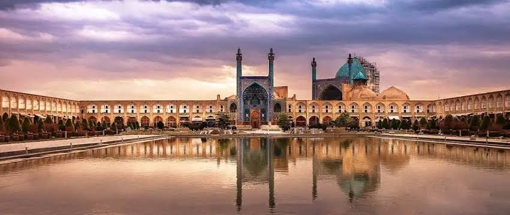
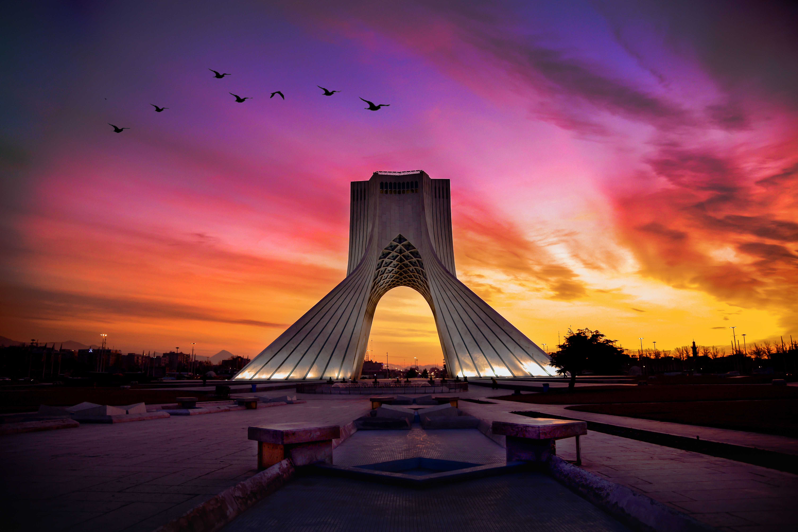
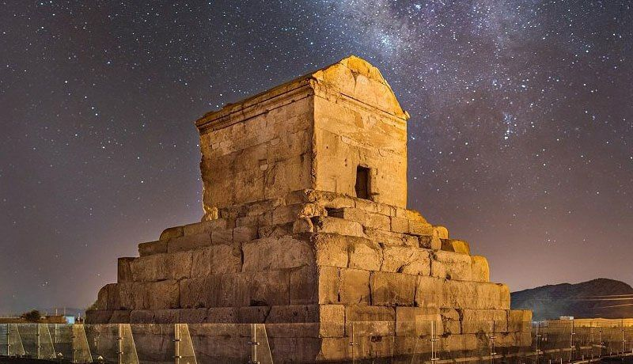
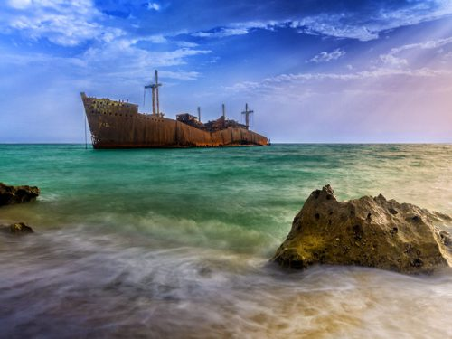
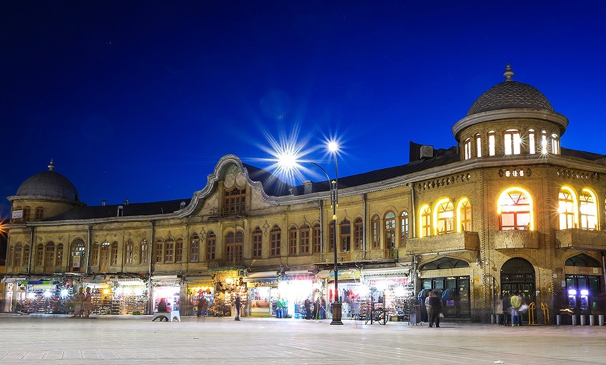
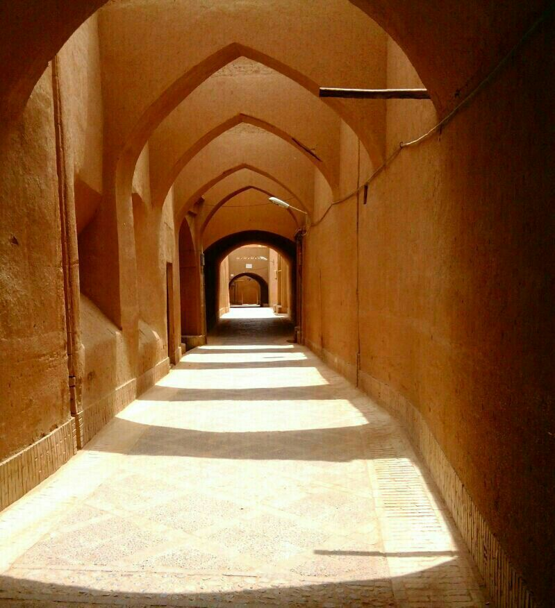

ISFAHÁN
La joya de Persia, famosa por sus mezquitas, puentes históricos y bazares.
Descubre un destino fascinante donde la historia cobra vida, los paisajes te dejan sin aliento y cada rincón esconde una historia por contar. Sumérgete en una cultura milenaria, recorre ciudades llenas de encanto y vive experiencias inolvidables.

La joya de Persia, famosa por sus mezquitas, puentes históricos y bazares.

Capital moderna llena de museos, palacios y espectaculares vistas montañosas.

La ciudad de los poetas, los jardines persas y la hermosa Mezquita Rosa.

Una isla paradisíaca de aguas turquesas en el golfo Pérsico.

Una de las ciudades más antiguas del mundo, llena de historia y cultura.

Ciudad de adobe rodeada por el desierto, famosa por sus torres del viento.